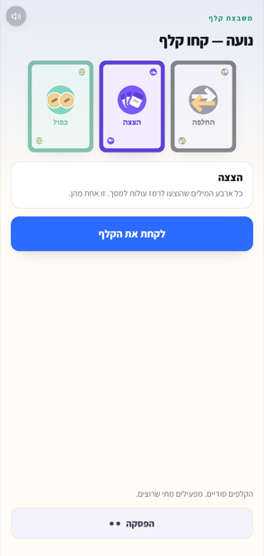

משחק לכל המשפחה · טלפון לכל אחד
אימון
משפט אחד · הזדמנות אחת
מישהו אחד יודע את המילה ואומר עליה משפט אחד. השאר צריכים לקלוט מה זה. והטריק: הוא לא רוצה שיקלטו מהר.
שלושים ושמונה שניות · צולם ממשחק אמיתי על שלושה טלפונים
הרעיון
כל שנייה שלוקח להם — שווה לכם יותר.
הנותן צובר לפי מתי קלטו אותו, לא לפי אם קלטו. וזה הופך כל רמז להחלטה: רמז מעורפל מדי מסוכן בדיוק כמו רמז ברור מדי.
אף אחד לא קלט? הנותן לא מקבל כלום.
מה יש בפנים
אותו לוח לא משחק אותו דבר פעמיים.
המשבצת שהנותן עומד עליה קובעת את סוג הסבב — ומי שמתקדם, מתקדם לתוך סבבים קשים יותר.

ארבע מילים, שוות 1 עד 4. המסך הזה נראה רק לנותן.

כל נקודה היא צעד. הראשון לסוף מנצח.

קלף שנופל באמצע סבב ומשנה אותו.
ושבעה קלפים שנופלים באמצע סבב ומשנים אותו: סטופר, הצצה, וטו, פנטומימה, כפול, החלפה וכיסוי עיניים.
חמישה־עשר פרצופים, מסבתא ועד הקטנים. אף אחד לא נשאר עם אות ראשונה בעיגול.
איך מתחילים
שלושים שניות עד הסבב הראשון.
משחק שלם הוא בערך עשרה סבבים — כ־25 דקות. ארבעה מקצבים קובעים כמה מהר זה רץ, וחמישה לוחות קובעים על מה תיפלו בדרך.
מארח אחד פותח את הכתובת.
כולם מקישים את קוד החדר בטלפון שלהם — אין מה להתקין, ואין חשבונות.
בוחרים פרצוף, ומתחילים.
יש טלוויזיה או טאבלט? פתחו שם את אותה הכתובת — תקבלו מסך שמראה את הלוח ואת הניקוד, בלי לתפוס מקום במשחק.
ואיך יושבים
חדר הוא קוד בן ארבע אותיות, שם פרטי ופרצוף — והכול נמחק כשהחדר נסגר.
להורדה